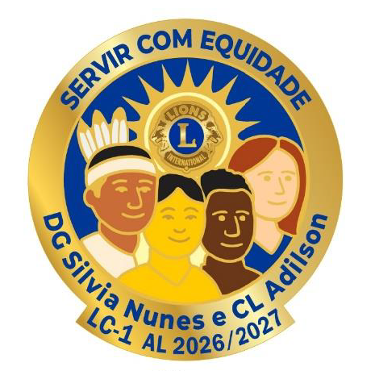

Mensagem da Governadora
Prezados Companheiros,
Minha caminhada no Movimento Leonístico conduziu-me até este momento, que recebo com muita alegria, gratidão e senso de responsabilidade. Tenho plena convicção de que o futuro do nosso Distrito depende de cada um de nós.
Nosso Presidente Internacional nos inspira com o lema "Enraizados no Servir", convidando-nos a criar raízes fortes por onde passarmos, fortalecendo o espírito de serviço, a amizade e o compromisso com nossas comunidades.
No Distrito LC-1, Berço do Leonismo no Brasil, adotamos o lema "Servir com Equidade", reconhecendo as diferenças, respeitando as individualidades e buscando atender às necessidades de cada pessoa com justiça, dignidade e acolhimento.
Esses dois lemas se complementam de forma extraordinária. Quando criamos raízes profundas no servir, fortalecemos nosso compromisso com a comunidade; e, ao servir com equidade, ampliamos nosso olhar e nossa capacidade de alcançar mais pessoas, levando um serviço cada vez mais significativo, humano e transformador.
Vejo um futuro próspero e de grandes realizações para todos nós do LC-1. Unidos, vamos ampliar nossos serviços, servir com amor ao próximo, fortalecer nossos clubes e fazer do nosso Distrito um verdadeiro celeiro de harmonia, fraternidade e paz.
Conto com cada companheiro nessa caminhada. Juntos, enraizados no servir e guiados pela equidade, faremos a diferença.
DG CaL Silvia Nunes e CL Adilson
Apresentação do Pin Oficial

Este pin oficial do Ano Leonístico 2026/2027 representa a liderança da DG Silvia Nunes e do CL Adilson no Distrito LC-1.
O pin reúne, de forma simbólica e significativa, os valores centrais do Lions Club Internacional. Cada elemento foi escolhido para comunicar tradição, mudança, diversidade, unidade e o compromisso permanente com o servir humanitário.
O símbolo oficial do Lions representa a força da comunidade leonística, a coragem de servir e a fidelidade aos seus pilares: liderar com humildade, servir com dedicação e promover a compreensão entre os povos. Sua presença reafirma o respeito pela história, pela ética e pela missão que orienta o Lions em todo o mundo.
No centro do pin, as quatro etnias simbolizam inclusão, diversidade e equidade. Essa imagem reforça que o serviço leonístico é universal e acolhe todas as pessoas, independentemente de cultura, origem ou condição, materializando o ideal de compreensão e fraternidade entre os povos.
As cores tradicionais do Lions: o azul expressa lealdade e compromisso; o dourado representa luz, esperança e generosidade. São cores que remetem ao emblema leonístico e refletem a pureza de propósito e a energia do serviço voluntário.
O significado do lema
O lema "Servir com Equidade" sintetiza a essência da proposta para o ano leonístico. O verbo Servir reafirma o compromisso permanente do Lions: transformar vidas por meio da ação voluntária e responsável, mantendo viva a mensagem central do movimento, "Nós Servimos".
O termo com destaca o espírito de colaboração que orienta o leonismo moderno: servir ao lado da comunidade, dos clubes e das lideranças, valorizando o trabalho em equipe e a parceria.
A palavra Equidade dá ao lema sua força ética e humanitária. Representa o compromisso de reconhecer as diferenças, compreender necessidades específicas e promover oportunidades justas para todos. É o olhar sensível, inclusivo e respeitoso que deve guiar a liderança leonística.
"Servir com Equidade" expressa uma visão moderna e humanizada do Lions: um serviço guiado pela justiça, pela empatia e pela responsabilidade social, que honra a tradição ao mesmo tempo em que aponta para um futuro mais fraterno e comprometido com a dignidade humana.